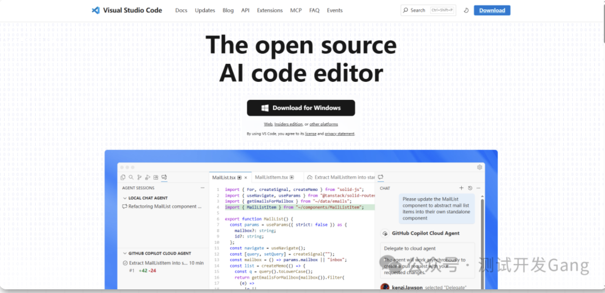
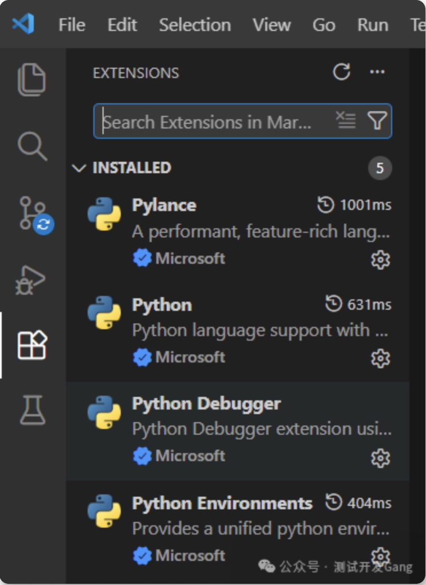
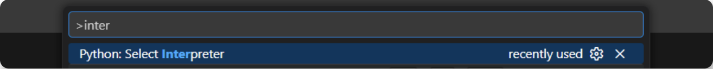
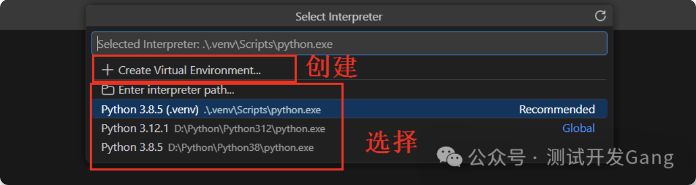
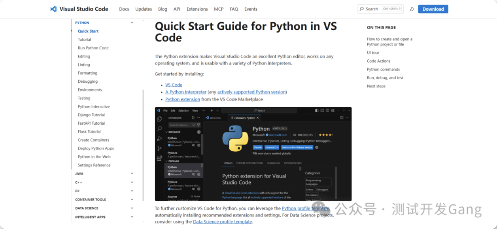
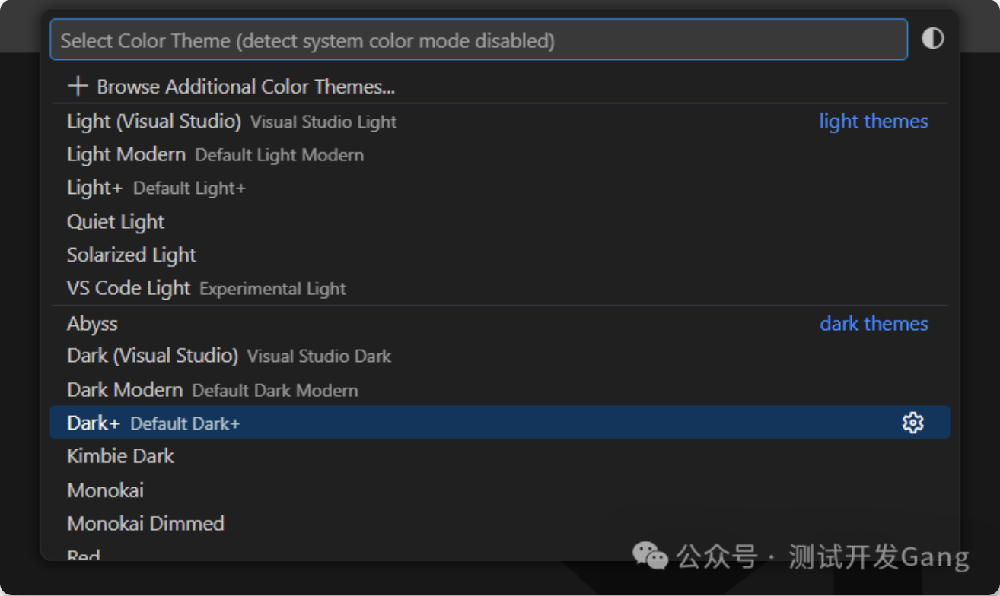
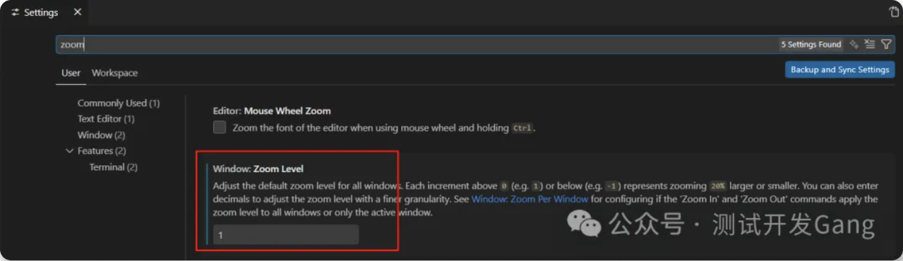
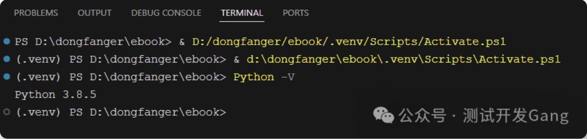

本书作者：测试开发刚哥，文章版权归个人所有，未经授权请勿转载。
今天就来介绍一款开源、免费、颜值高的“瑞士军刀”—— VS Code (Visual Studio Code)
VS Code 到底是个啥？
官方网站：https://code.visualstudio.com/

Visual Studio Code是微软开发的一款开源代码编辑器，它使用Electron框架构建，这使得VSCode能够跨平台运行在Windows、macOS和Linux上。
Electron是一个使用Web技术（HTML、CSS、JavaScript）构建跨平台桌面应用的框架，它结合了Chromium渲染引擎和Node.js运行时。VSCode利用Electron的这些特性，提供了丰富的编辑功能、扩展系统和现代化的用户界面。
vscode最吸引我的特点是“轻量”，轻的就像一个普通的浏览器，家里电脑风扇不再呼呼转。同时它也是开源免费的，有很多插件可以安装，支持多种语言，比如Python和前端，只需要安装这1个软件就行了。
VS Code 安装，傻瓜式操作零门槛
打开官网https://code.visualstudio.com/，页面会自动识别你的系统，直接点下载按钮就行，Windows 选 64 位安装包，Mac 选对应芯片的版本（Intel/Apple Silicon）。
下载完成后双击安装包，一路下一步就好，这里提个小建议：Windows 用户记得勾选 “添加到 PATH” 和 “右键打开方式”，后续用起来会方便很多。
Python 插件安装
VS Code 原生不自带 Python 的专属支持，装个插件就搞定。
打开 VS Code，左边侧边栏有个扩展图标，也可以按快捷键Ctrl+Shift+X（Mac 是Cmd+Shift+X）打开扩展市场。
在搜索框里输入Python，第一个就是微软官方出的 Python 插件，图标是个小蛇，直接点安装，等待几秒安装完成就好，不用重启，即时生效。

环境配置
别被环境配置吓到，其实很简单的。
我们用惯了PyCharm，切换到vscode会有些不适应，因为pc默认进行了很多配置，这些配置都隐藏在.idea里面。
这里着重介绍虚拟环境配置，其他问题可以等遇到了再解决。
打开一个 Python 项目文件夹（重点：一定要先打开文件夹，VS Code 是基于文件夹管理项目的）；
按Ctrl+Shift+P（Mac 是Cmd+Shift+P）打开命令面板，输入inter

下拉列表里会显示电脑里所有的 Python 解释器，包括系统自带的和各个虚拟环境的，选你想用于当前项目的那个就行，选完后 VS Code 会自动在项目里生成.vscode文件夹，保存解释器配置，下次打开直接用。
如果没有虚拟环境，也可以直接创建。

另外官网也有Python、Django、FastAPI、Flask等环境配置介绍：

如果文档看着麻烦，可以把链接扔给AI，让它总结重点的方式进行学习。
界面样式
刚开始用vscode，有3个样式我调整了下。
1、主题，Dark+，没有那么黑，对眼睛友好点

2、放大，默认界面的文字有点小，可以设置Zoom Level把UI放大

3、终端样式，默认的有点太简陋

在.vscode/settings.json配置，这个配置是AI给我的，大家也可以自行调整
{
"terminal.integrated.fontFamily": "Fira Code, 'Courier New', monospace",
"terminal.integrated.fontSize": 14,
"terminal.integrated.fontWeight": "normal",
"terminal.integrated.lineHeight": 1.3,
"terminal.integrated.letterSpacing": 0.5,
"terminal.integrated.cursorStyle": "line",
"terminal.integrated.cursorBlinking": true,
"terminal.integrated.cursorWidth": 2,
"terminal.integrated.scrollback": 10000,
"workbench.colorCustomizations": {
"terminal.background": "#1e1e1e",
"terminal.foreground": "#d4d4d4",
"terminal.ansiBlack": "#000000",
"terminal.ansiRed": "#cd3131",
"terminal.ansiGreen": "#0dbc79",
"terminal.ansiYellow": "#e5e510",
"terminal.ansiBlue": "#2472c8",
"terminal.ansiMagenta": "#bc3fbc",
"terminal.ansiCyan": "#11a8cd",
"terminal.ansiWhite": "#e5e5e5",
"terminal.ansiBrightBlack": "#666666",
"terminal.ansiBrightRed": "#f14c4c",
"terminal.ansiBrightGreen": "#23d18b",
"terminal.ansiBrightYellow": "#f5f543",
"terminal.ansiBrightBlue": "#3b8eea",
"terminal.ansiBrightMagenta": "#d670d6",
"terminal.ansiBrightCyan": "#29b8db",
"terminal.ansiBrightWhite": "#ffffff",
"terminalCursor.background": "#ffffff",
"terminalCursor.foreground": "#ffffff",
"terminal.selectionBackground": "#264f78"
}
}